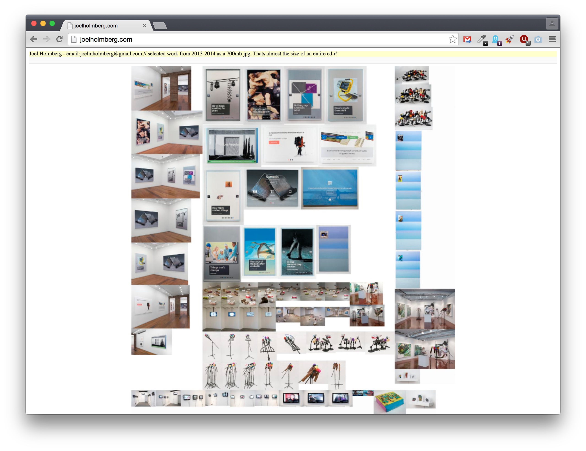
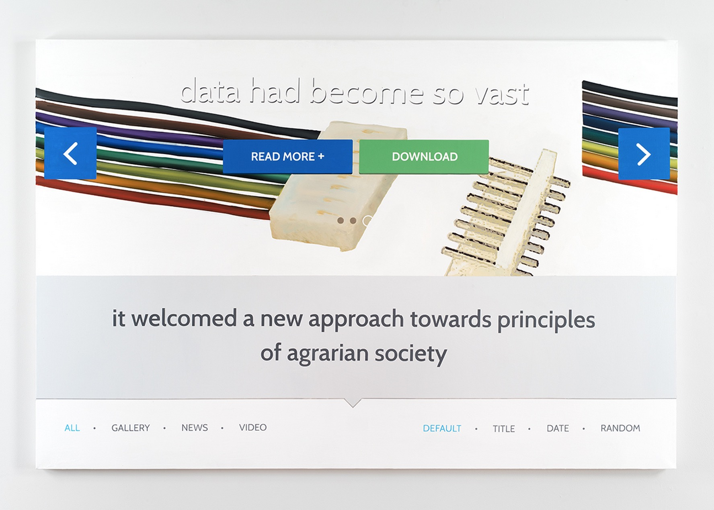
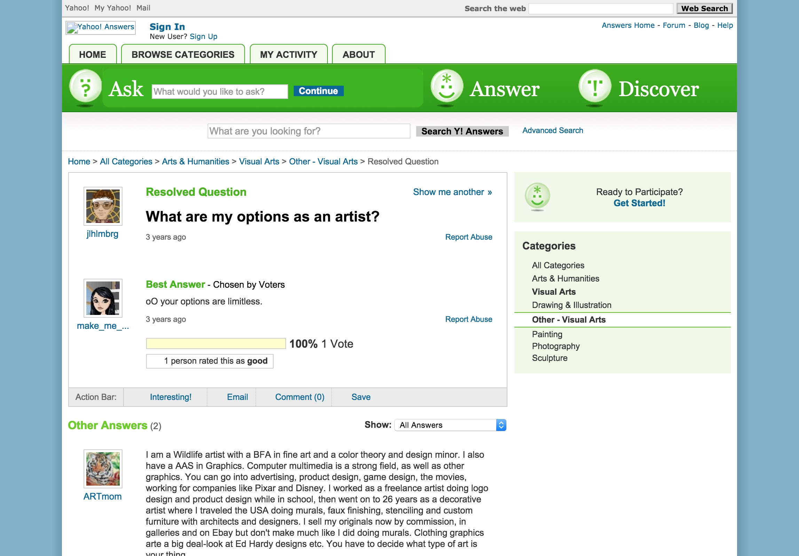
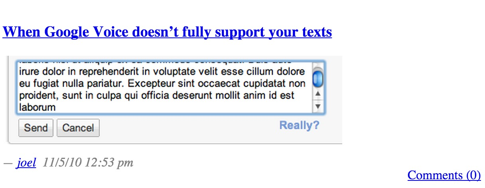

Your work often deals with the visual/verbal tropes of the Internet. Have you always been drawn to the language and surface of the web rather than the "technical" side?
My technical background goes back to selling personal computers at Circuit City in High School and community college. This was my nerd education. I worked there for 3 or 4 years. This experience laid the ground work for a lot of the supply chain business decisions and sales team double speak that continue to define our relationship with technology today.

Screenshot of Holmberg's site (a single, massive image)
It seems like many artists whose work engages with the Internet also do some commercial work (designing and so on). Do you? In either case, how do you think this affects your work?
I have never built my own CMS from scratch, but I might be able to given enough trial and error. That is a key technical distinction between myself and other developer friends of mine. I have a difficult time making sites that are stable and do not break after a few months. I wrote about that in a press release for my last show in nyc.

Data So Vast, 2014. Acrylic and oil on canvas, 48 x 72".
Some of your work uses internet tools to subvert themselves (e.g. Legendary Account), but your more recent work applies explicitly digital/tech tropes to traditional media. Do you see this more recent work as developing out of the earlier, more web-based work or is it a distinct project?
This new work began with an early portfolio site that I built for myself using Joomla CMS. I maintained that database from 2009 until early 2014. Joomla has a really large community of developers who create free and commercial extensions and templates.They are all pretty busted and have some serious security holes, but the designs choices hopefully disguise their flaws, which is lol. I paid for a subscription to a template club called RocketTheme. This portfolio site eventually transformed from a place to showcase documentation of my work to being a place to express my ideas and observational humor. Joomla gave my voice a sense of authority and false permanence. As the site became more and more unstable I turned to the option of painting some of the slide carousels as they appeared on my site in order to commemorate that moment. As this series has evolved I have moved onto other slick online identities such as mclaren.com and used their compositions as a containers for my own language.
When you started working on Legendary Account, did you think about whether or how it would be exhibited? How did the translation from web to analog (it was printed, right?) affect it?
No. When I started working on it I was just beginning to feel the edges of Yahoo! Answers's mass. Its something that I kept coming back to and kept prodding at. Then I began to write these questions that fit into the circumstances of that context. I think a generous thing to do if you want to share ideas with people is to isolate what it is that you would like for them to consider.

Screenshot of a Yahoo! Answers thread from Legendary Account
Do you think "net art" is a useful term today? Was it ever?
Things always get codified, but even though its "net art" it still needs to be "art". Often its just a wack label that lowers people's standards and helps them get funding and curatorial support.

Screenshot of a post from Nasty Nets
To what extent was Nasty Nets a conscious art project different from other imageboards?
hmm what do you mean?
[I didn't get a chance to follow up!]